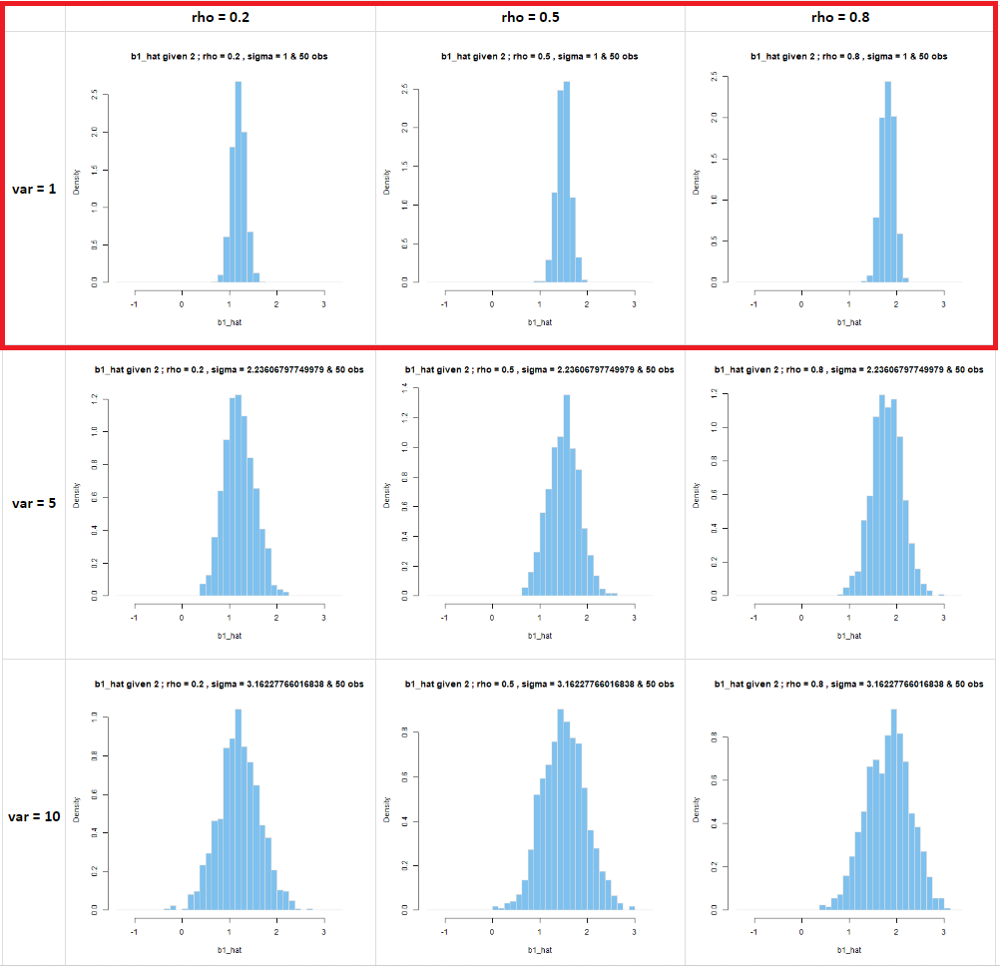

part 1 : b1_hat and b2_hat x (ρ, σ, pid)
first, there are 135 histograms here. rho x sigma x pid makes 27, times 5 variables : b1_hat, b2_hat, t1, t2, r_sq
both b1_hat and b2_hat are unbiased under pid_1
pid_1 is well specified (insofar as the instruction shows us [[b1_hat],[b2_hat]], which doesnt estimate an intercept, but we can make b_0 = 0, so the interceptless regression of y on x1 x2 works just fine
the variance of b1_hat and b2_hat increase with sigma and rho
sigma is just noise, and obfuscates the actual influence of x1 and x2.
rho increasing means x1 and x2 are correlated. the bigger rho is, the more likely it will be that we observe x2 above E[x2] when x1 is above E[x1], and so on.
this makes it hard to tell what is acting on y, since x1 and x2 move together
onto pid_2
under pid_2, b1_hat is biased, and it'll stay that way. but it's harder to tell when sigma is high. but when sigma is low, and rho is high, then it's very clear. i put a red box around it.
\hat{\beta_1} \xrightarrow{p} \dfrac{ \text{cov}(x_1, y)}{\text{var}(x_1)} = \beta_1 + \underbrace{\beta_2 \cdot \dfrac{ \text{cov}(x_1, x_2)}{\text{var}(x_1)}}_{\text{no } x_2 \text{makes OVB}} + \underbrace{\dfrac{ \text{cov}(x_1, e)}{\text{var}(x_1)}}_{\text{should be 0 }}
increasing sigma doesnt bias anything, it just increases the variance of b1 and b2
but leaving x2 out entirely, that's a pickle. that's the OVB. the beta1_hat won't converge on beta_1 (probably). the more observations you add, the better you'll be at being wrong. so b1_hat won't be unbiased nor will it be consistent.
clearly, the histograms for b2_hat are just sticks, living at b2_hat = 0, since it wasn't included in the model

under pid_3
pid_3 is this : if pid_1 says t2 is too low (in absolute terms), it's probably not important, so get rid of it
looking at this, it starts the same as pid_1.
neither sigma nor rho makes b1_hat or b2_hat unbiased or not consistent, but they both add to the noise
so as they go up, the chances that we'll get a bad roll on t2 under pid_1 is higher
so even tho there is nothing wrong with the estimate, the idea is that we used a low t2 to get rid of x2
sigma=5, rho=0.8 is funny, since the distribution of b1_hat is in the middle of choosing between pid_1 and pid_2
|
like a butterfly, the distribution of b1_hat changes
unlike a butterfly, it does so in plain sight
|
|
sigma2 = 1
is unbiased and consistent
|
sigma2 = 5
learning bad habits
|
sigms3 = 10
accepted bad habits
|
|
|
 |
|
this is a theatrical evolution
|
pid_3 isn't necessarily a jumble of both pid_1 and pid_2. but it can be. when sigma is small, that isn't the case. Even here (above, sort of) we can see rho is 0.8, and the distribution looks ok other than some skew. When when both sigma and rho are large, it is more likely that abs(t2) is small, so it gets kicked out of the model. It's too many cooks spoil the broth.
|
the evolution of spoiled broth
in slow motion
|
|
pid_1
(well specified)
|
pid_3
(the erosion of quality)
|
pid_2
(rock bottom)
|
|
|
|
|
naturally i changed the order for dramatic effect
|
part 2 : pid_3, and density of b2_hat
its the same as what i said above for b1, just more dramatic
in pid_1, there was nothing wrong with b2_hat. in pid_2, its just a line
as sigma and rho go up, it is much more likely that t2 is low, and we drop x2. but NOT EVERY time. so sometimes b2_hat is included in pid_3, and there's some reasonable estimate. but when it's dropped, we get a dumptruck of zeros.
it obviously depends a lot on sigma and rho, because when they are both small, the odds of getting a significant result on b2_hat is higher, so we keep x2 in the model on the basis of that higher t2.
| average(b2_hat) |
| procedure_id |
sigma / rho |
0.2 |
0.5 |
0.8 |
| 1 |
1 |
1.0026 |
0.9988 |
1.0069 |
| 1 |
2.236 |
1.0122 |
1.0054 |
0.9964 |
| 1 |
3.1622 |
0.9795 |
0.9875 |
0.9788 |
| 2 |
1 |
0 |
0 |
0 |
| 2 |
2.236 |
0 |
0 |
0 |
| 2 |
3.1622 |
0 |
0 |
0 |
| 3 |
1 |
1.0026 |
0.9988 |
1.001 |
| 3 |
2.236 |
0.9462 |
0.876 |
0.664 |
| 3 |
3.1622 |
0.7218 |
0.6652 |
0.4823 |
part 3 : look at t1
looking at the t stats tells the same story as the histograms of b1 and b2_hat
under pid_1, both are unbiased and consistent, and
under pid_2, t1 will look amazing, because its eating all of x2s hard work
we made them correlated, so even intuitively, if x1 goes up, that correlates positively with y AND x2. But x2 is correlated with y so theres a boost from that association. I do hesitate to say, it goes up because of x1 or x2 etc because we just know they're correlated
anyhow, t1 under pid_3 will have some skew because whenever x2 gets dropped, the model kicks back to pid_1. sind t1 is higher under pid_2 than pid_1, t1 under pid_3 is basically what it was under pid_1 but with some heavy hitters from pid_2, giving it that positive skew
i don't know if we discussed it, but if the t-stats t1 and t2 are correlated, that means we're dropping low values of t1 from pid_1 and replacing them with high values from pid_2
under pid_3, for t2, the idea is if abs(t2) falls below 2, we drop it. when sigma and rho are small, the estimates are less noisy. so we dont drop so many. as they both increase, we drop more and more.
t2 under pid_3 is just t2 under pid_1, but with the left tail (or left body idk) cropped, and absorbed by a gigantic pancake.
when they are highly correlated, there is a bigger chance of both t1 and t2 being less than 2. but not necessarily in the same model. t1 and t2 are not independent. so thats where the boost comes from
part 4 : on r_sq
in this case, increasing rho has caused r_sq to increase somewhat. but there's an upper limit of that.
pid_3 is a mix of pid_1 and pid_2 again, with the
increasing correlation between x1 and x2 increases r2
| pid |
sigma / rho |
0.2 |
0.5 |
0.8 |
| 1 |
1 |
0.7108 |
0.7541 |
0.7874 |
| 1 |
2.236 |
0.3454 |
0.3905 |
0.4314 |
| 1 |
3.1622 |
0.2147 |
0.2535 |
0.2881 |
| 2 |
1 |
0.4241 |
0.5661 |
0.7067 |
| 2 |
2.236 |
0.2053 |
0.2877 |
0.383 |
| 2 |
3.1622 |
0.1295 |
0.1856 |
0.2517 |
| 3 |
1 |
0.7108 |
0.7541 |
0.7872 |
| 3 |
2.236 |
0.3403 |
0.3836 |
0.4218 |
| 3 |
3.1622 |
0.201 |
0.2395 |
0.2749 |
R^2 \rightarrow 1 - \dfrac{\sigma_{u}^2 }{ \sigma_y^2 } = 1 - \dfrac{\text{var}(u)}{\text{var}(y)}
generating x1 x2
i used R and there isn't a built-in function, but there is solution for the 2-variable case provided at the following link
https://stats.stackexchange.com/questions/15011/generate-a-random-variable-with-a-defined-correlation-to-an-existing-variables
the correlation makes t2 noisy
if x1 and x2 are correlated, there might be a lot of noise around either x1 or x2. if there is a lot on x2, then it will have a low t stat
so there might be light-mulitillinearity
and if we dont examine it, we end up getting rid of x2, when it was correlated with y and x1
by getting rid of it, now x1 is biased, because of OVB
standardize the pictures
In the pictures below, i picked a bin_width that I thot worked, then got the lower_bound and upper_bound of the variable in question, and rounded to the nearest bin_width. And the histograms show densities, not frequencies.